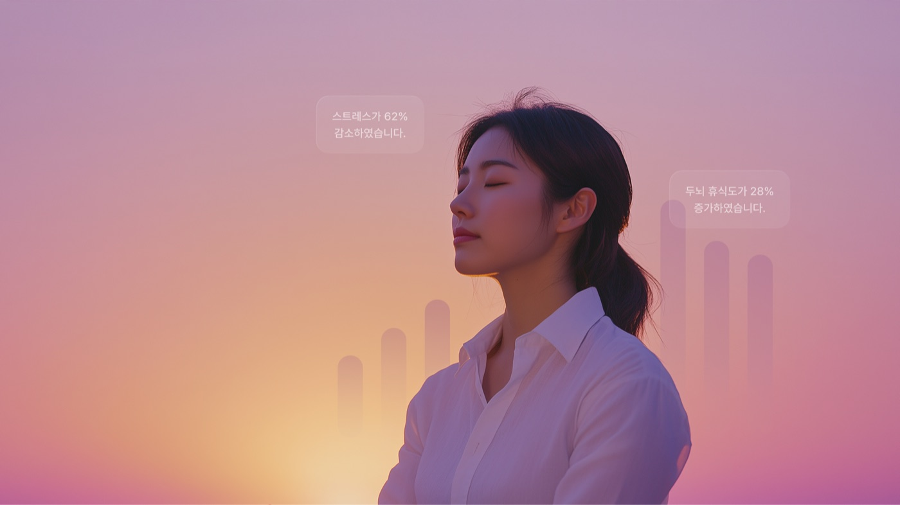
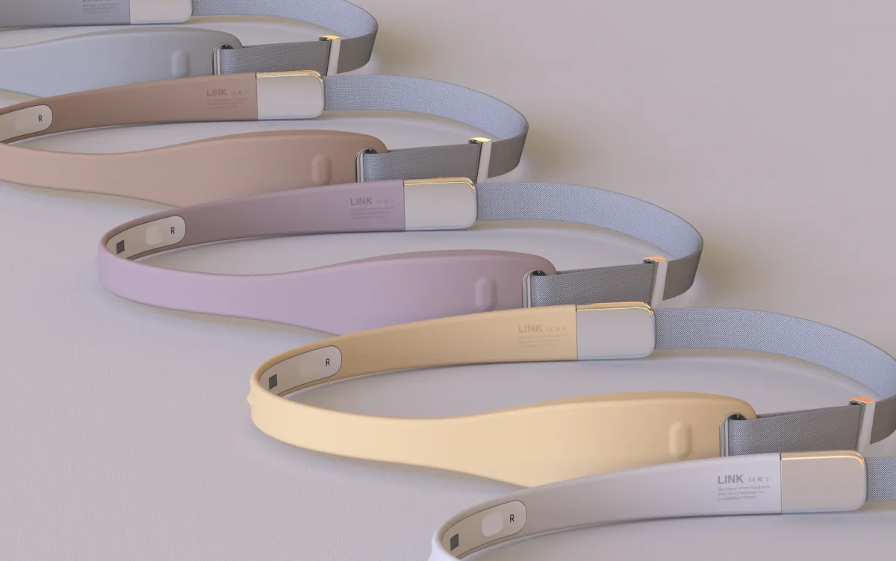
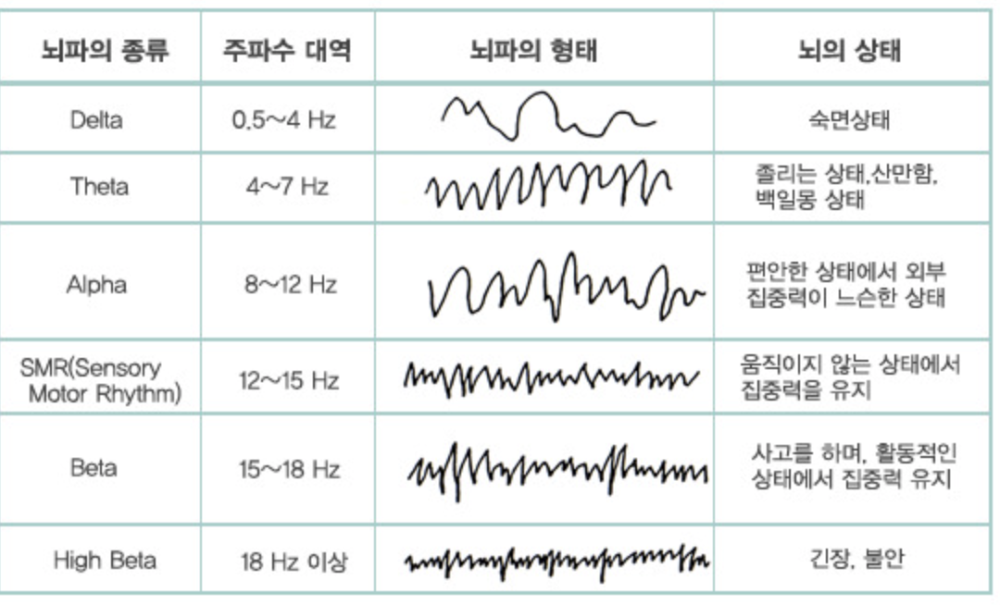
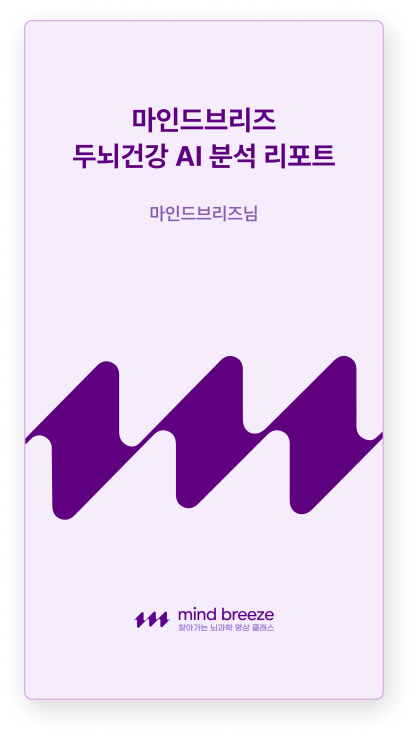
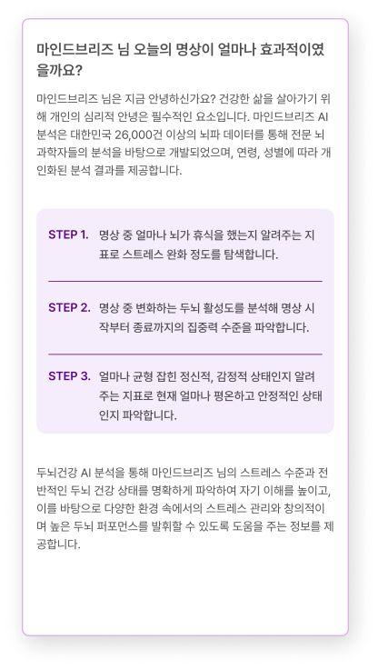
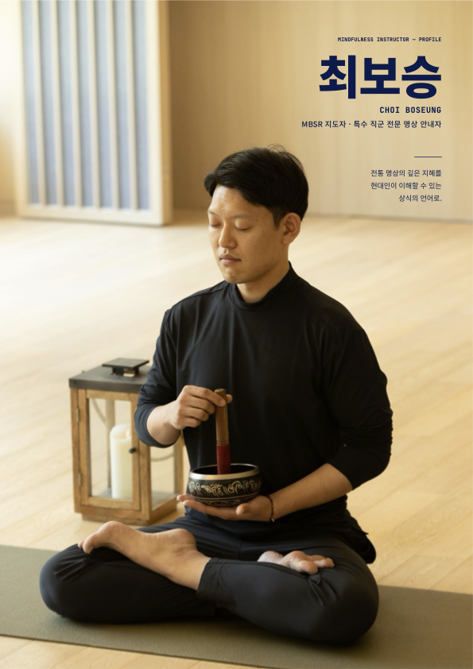
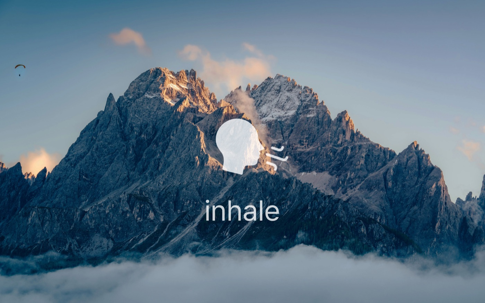
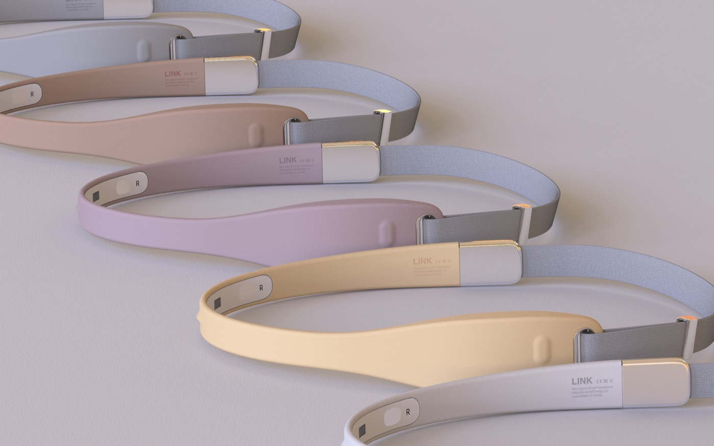

대구광역시교육청 학부모지원센터
학부모 대상 몸·마음 돌봄
8회기 명상 프로그램
제안서 및 견적서
마음을 돌보는 일, 변화가 보이도록.

부모의 쉼에서 시작하는
가족의 변화
학부모의 스트레스 완화와 자녀 관계 개선을 위해, 연구로 검토된 MBSR 수련에 뇌파·생체신호 기반 Mind Breeze 2.0을 결합한 프로그램을 제안합니다.
| 프로그램명 | 학부모 대상 몸·마음 돌봄 8회기 명상 프로그램 |
| 대상 | 대구광역시교육청 관내 학부모 · 클래스당 40명, 총 80명 |
| 과정 | 몸 돌봄 4회기 + 마음 돌봄 4회기 · 회기당 120분 |
| 운영방식 | 몸돌봄·마음돌봄 2개 클래스 병행 · 주 1회씩(주 2회) · 4주 8회기 (합계 8회차) |
| 기간 | 2026년 10월 중순 ~ 11월 (총 4주) |
| 강사 | 최보승 (MBSR 지도자) |
| 장비 | LINK BAND 2.0 40대 · Mind Breeze 2.0 플랫폼 1식 |
| 목표 | 스트레스 알아차림 · 정서 조절 · 부모-자녀 간 의사소통 개선 |
검증된
표준 프로그램
MBSR의 핵심 수련을 학부모의 일상과 양육 상황에 연결합니다.
데이터로 확인하는
명상
주관적 경험과 선택형 생체신호를 함께 살펴봅니다.
운영
최적화
몸·마음 돌봄 두 트랙으로 4주에 걸쳐 8회기 수련을 완성합니다.
본 제안은 표준 8주 MBSR의 핵심 수련을 4주·8회기로 조정한 운영안입니다. 표준 과정과 동일한 효과를 전제하지 않고 운영 결과를 확인합니다.
아이의 마음을 돌보려면,
부모의 마음부터
자녀의 정서적 어려움을 함께 견디는 학부모에게도
자신의 스트레스를 알아차리고 돌볼 시간이 필요합니다.
중·고등학생의 일상 속 높은 스트레스
최근 12개월 내 우울감 경험
출처: 질병관리청 2024 청소년건강행태조사. 청소년 통계이며 학부모의 유병률을 의미하지 않습니다.
스트레스는 관계 안에서 서로 영향을 줍니다
부모의 긴장과 정서적 소진
양육과 일상의 부담이 쌓이면 자신의 감정을 알아차릴 여유가 줄어듭니다.
자동적인 반응과 대화의 어려움
예민한 반응과 부정적 대화가 반복되면 가정의 정서적 분위기에 영향을 줄 수 있습니다.
자녀의 반응과 관계의 악순환
자녀의 불안·위축·갈등이 다시 부모의 부담으로 이어질 수 있습니다.
경로 설명 참고: Potharst 외(2019), 부모 스트레스와 마음챙김 양육 연구. 개인과 가정에 따라 양상은 다릅니다.
반응하기 전, 잠시 멈출 수 있는 힘.
부모가 자신의 감정과 몸의 신호를 알아차리는 수련은
자기 돌봄과 공감하는 대화를 시작하는 실천적 기회입니다.
알아차림을 배우고,
대응하는 힘을 기릅니다
MBSR · Mindfulness-Based Stress Reduction
1979년 존 카밧진이 개발한 마음챙김 기반 스트레스 감소 프로그램입니다. 표준 8주 과정은 바디스캔·명상·요가 수련으로 현재의 경험을 알아차리고 스트레스에 대응하는 방법을 익힙니다.
연구에서 관찰된 변화
| 영역 | 연구 결과 및 적용 시 해석 | 대표 연구 |
|---|---|---|
| 스트레스 | 건강한 성인 대상 MBSR 연구에서 스트레스 감소가 보고되었습니다. | Khoury 외, 2015 |
| 불안·우울 | 명상 프로그램의 불안·우울 감소에 중간 수준의 근거가 제시되었습니다. | Goyal 외, 2014 |
| 양육 스트레스 | 부모 대상 마음챙김 중재에서 감소 경향이 관찰되었으나 연구의 질적 한계가 있습니다. | Burgdorf 외, 2019 |
| 부모 정신건강 | 발달장애 자녀를 둔 어머니 대상 연구에서 심리적 고통 감소가 보고되었습니다. | Dykens 외, 2014 |
| 부모-자녀 관계 | 스트레스가 높은 어머니 대상 양육 중심 중재에서 양육 행동 개선 가능성이 보고되었습니다. | Chaplin 외, 2021 |
| 자녀 결과 | 일부 정서·행동 결과에 개선 가능성이 있으나 지표별 차이가 있어 일반화에 주의가 필요합니다. | Chaplin 외, 2021 Burgdorf 외, 2019 |
핵심 수련은 유지하고, 일상 적용은 가깝게.
본 과정은 8회기를 4주에 운영합니다. 회기 사이에는 짧은 개인 수련과 양육 상황의 알아차림을 연계해 배운 내용을 일상에서 실천하도록 돕습니다.
위 연구는 표준 MBSR 및 다양한 마음챙김·양육 중재를 포함합니다. 대상·기간·대조군이 서로 달라 본 프로그램의 효과를 직접 입증하지 않습니다. 결과는 개인별로 다를 수 있습니다.
기술이 돕고,
사람이 돌봅니다
상담센터 · 상담사 · 명상가를 위한 뇌파 기반 심리상담·명상 통합 플랫폼.
기록은 AI에게, 집중은 사람에게.

LINK BAND 2.0
EEG+PPG+ACC 통합 웨어러블
말로 다 전하지 못한 순간,
몸의 신호도 함께 읽어요.
실시간 수집 · 명상·수면·집중력 분석 활용 · 30여 종 지표

뇌파와 생체신호를 수련 경험과 함께 살펴봅니다.측정 데이터는 진단이 아닌 자기 이해의 참고 자료입니다.
작은 변화에도,
이야기가 있으니까.
몸·마음 데이터와 수련 경험을 함께 살피는 서사형 리포트


이미지·화살표는 리포트 및 해석 방향의 예시이며 본 사업의 실측 결과나 보장 효과가 아닙니다. 호흡·정서 상태는 자기보고와 해석을 함께 확인하며, 모든 항목이 직접 측정되는 것은 아닙니다. 측정은 선택 사항이며 미착용자도 수련에 참여합니다. 사양·실적은 제공된 제안 자료 기준. LINK BAND 제품 안내.
명상의 순간을 기록하고,
몸과 마음의 변화를 함께 읽습니다.
기록은 AI에게, 집중은 사람에게. / 기술이 돕고, 사람이 돌봅니다.
Mind Breeze 2.0은 뇌파(EEG) 기반 심리상담·명상 통합 서비스 플랫폼입니다. 앱과 웹을 통해 명상 지도사(상담사)와 참여자가 한 공간에서 만나 수업을 진행하고, 세션 기록·AI 요약·몸·마음 리포트를 제공하여 수련의 변화를 데이터로 확인할 수 있게 합니다.
대상별 가치
상담센터·기관
운영은 체계적으로, 돌봄의 질은 한결같이.
세션부터 기록·리포트까지 한곳에서 관리
세션 관리 · 기록 연결상담사
기록하는 시간보다, 마주 보는 시간을.
동의받은 음성을 AI가 기록·요약, 전문가 검토
AI 기록·요약 · 전문가 검토명상가·지도자
느꼈던 작은 변화를, 함께 나누는 언어로.
선택적으로 측정한 몸·마음의 흐름을 서사형 리포트로 전달
선택형 측정 · 변화 피드백서비스 흐름
세션을 준비하고
상담·명상 일정을 등록하고, 참여자와 측정 여부를 정해요.
사람에게 집중하면
동의받은 음성을 기록하고, 원할 때 LINK BAND로 신호를 측정해요.
AI가 기록을 정리해요
기록과 요약을 검토하고, 측정된 변화도 함께 살펴보세요.
변화를 함께 나눠요
리포트를 확인한 뒤 전달하고, 다음 만남의 대화를 이어가세요.
앱·웹 핵심 기능
AI 상담 기록·요약
동의받은 음성 기록을 AI가 정리·요약
선택형 생체신호 측정
LINK BAND 연동으로 호흡·심박·뇌파 측정 (착용은 선택)
몸·마음 서사형 리포트
점수 대신 변화의 이야기로 (BODY: 호흡·심박·박동간격 / MIND: 집중·이완·감정안정)
클래스 운영
클래스 코드·초대 링크로 참여자 입장, Web Bluetooth(Chrome·Edge) 지원
몇 점인지보다, 어떻게 달라졌는지.
나를 평가하는 점수 대신, 나를 이해하는 이야기를 남깁니다.
몸과 마음, 두 갈래의 수련
4주에 걸친 8회기
주 1회 몸돌봄, 주 1회 마음돌봄.
두 클래스를 병행하며 4주에 걸쳐 8회기를 완성합니다.
몸 돌봄 · 강한 자극에서 미세한 자극으로
누르고, 움직이고, 지탱하고, 앉으며 마지막 주 40분 정좌에 이릅니다.
| 주차 | 주제 | 핵심 수련 | 몸의 감각 |
|---|---|---|---|
| 1주 | 누르다 | 듀오볼 마사지 · 바디스캔 | 누르는 몸의 감각 · 누운 바디스캔 30분 |
| 2주 | 움직이다 | 관절 요가 · 바디스캔 | 움직이는 몸의 감각 · 누운 바디스캔 30분 |
| 3주 | 지탱하다 | 세움 요가 · 정좌명상 | 지탱하는 몸의 감각 · 정좌명상 30분 |
| 4주 | 앉다 | 앉기 요가 · 정좌명상 | 멈춘 미세한 몸의 감각 · 정좌명상 40분 |
마음 돌봄 · MBSR 8주의 핵심 명상을 4회로
명상 후 탐구(Inquiry)로 경험·반응·정리 단계를 점검합니다.
| 주차 | 주제 | 핵심 수련 | 교육 내용 |
|---|---|---|---|
| 1주 | MBSR 명상 1 | 건포도 명상 · 바디스캔 | 자동조종 상태를 인식하고, 현재 순간에 주의를 두는 기본 태도 익히기 |
| 2주 | MBSR 명상 2 | 마음챙김 움직임 · 바디스캔 | 움직임과 정지 상태에서 신체 감각을 알아차리고, 흩어진 주의를 되돌리는 연습 |
| 3주 | MBSR 명상 3 | 마음챙김 움직임 · 정좌명상 | 호흡을 기준점 삼아 앉은 자세에서 주의를 머무르게 하고, 정좌명상의 기초 익히기 |
| 4주 | MBSR 명상 4 | 걷기 명상 · 정좌명상 | 걷기와 정좌명상을 통해 일상 동작 중 알아차림 지속을 익히기 |
한 회기의 흐름 / 총 120분
몸돌봄은 누르기·움직임·지탱·앉기 등 몸 감각 중심, 마음돌봄은 건포도·마음챙김 움직임·걷기 명상 중심으로 구성합니다. LINK BAND 측정은 본수련 중 선택적으로 진행합니다.
수련의 완성은, 생활 속 작은 실천입니다.
회기 사이 호흡 알아차림과 짧은 바디스캔을 실천하고, 자녀와 대화하기 전 잠시 멈추는 경험을 다음 회기의 탐구 시간에 나눕니다.
깊은 수련을,
일상의 언어로 전합니다
학부모의 경험에 귀 기울이며, 각자의 속도로
마음챙김을 익히도록 안내합니다.

최보승
CHOI BOSEUNG
특수 직군 전문
명상 안내자
몸의 감각과 호흡을 바탕으로, 스트레스 상황에서 자신을 돌보는 수련을 안내합니다.
“전통 명상의 깊은 지혜를
현대인이 이해할 수 있는 상식의 언어로.”
안정적인 운영,
선명한 실행 계획
몸·마음 돌봄 두 클래스를 병행 운영해,
총 80명의 학부모에게 4주 8회기 수련 경험을 제공합니다.
| 구분 | 몸돌봄 클래스 | 마음돌봄 클래스 |
|---|---|---|
| 참여 인원 | 40명 | 40명 |
| 운영 기간 | 4주 병행 | 4주 병행 |
| 수업 구성 | 주 1회 × 4주 = 4회기 | 주 1회 × 4주 = 4회기 |
| 회기 시간 | 120분 | 120분 |

LINK BAND 2.0 40대
+ 플랫폼 1식
장비 점검·충전·위생 관리 후 클래스 간 병행 활용.
착용 및 생체신호 수집은 참여자의 선택과 동의를 바탕으로 진행합니다.
2026년 운영 일정
사전 준비
참여자 모집 · 일정 확정
장비 및 공간 점검
프로그램 운영
몸돌봄·마음돌봄 병행
주 1회씩 · 총 8회차
결과 보고
참여·만족도 정리
변화와 개선 과제 공유
공간: 40명이 요가·명상을 수행할 수 있는 실내 공간 및 매트 준비 협의.
세부 운영일은 센터 일정에 맞춰 확정하며, 결과 보고는 개인정보를 제외한 집계 중심으로 구성합니다.
부모의 작은 변화가
가정의 새로운 일상으로
변화를 서두르기보다 알아차림을 쌓습니다.
자기 돌봄이 관계의 돌봄으로 이어질 수 있도록.

학부모 개인
스트레스 신호 알아차림
자기 돌봄의 습관 형성
정서 조절 연습
부모-자녀 관계
자동적인 반응 돌아보기
경청과 공감의 대화
갈등 상황의 대응 연습
가정·학교
건강한 양육 문화 지원
가정의 정서적 지지 강화
학부모 지원 경험 축적
경험과 데이터를 함께 살피는
학부모 마음건강 프로그램
수련 경험과 선택형 생체신호, 참여도·만족도를 함께 검토해
지역 학부모 지원 모델의 실행 가능성을 확인합니다.
평가 제안: 참여·수료 현황, 사전·사후 스트레스 자기보고, 참여 소감 및 만족도.
생체신호는 동의 참여자의 관찰 자료로 활용하며, 비교 가능한 데이터가 부족한 경우 그 한계를 함께 기록합니다.
견적서
수신: 대구광역시교육청 학부모지원센터
품명: 학부모 대상 몸·마음 돌봄 8회기 명상 프로그램 운영
총 견적 금액 · 부가가치세 포함
8,800,000원
2개 클래스 · 총 8회차
| 항목 | 회차당 단가 | 수량 | 금액 |
|---|---|---|---|
| LINK BAND 2.0 장비 대여료 | 400,000원 | 8회차 | 3,200,000원 |
| 강사비 | 400,000원 | 8회차 | 3,200,000원 |
| 출장비 | 200,000원 | 8회차 | 1,600,000원 |
| 공급가액 합계 | 1,000,000원 | 8회차 | 8,000,000원 |
| 부가가치세 10% | 800,000원 | ||
| 총액 | 8,800,000원 | ||
산출 내역
장비 LINK BAND 2.0 40대 × 10,000원/대/회차 = 400,000원/회차
강사비 몸돌봄·마음돌봄 2개 클래스 병행(각 200,000원) = 400,000원/회차
출장비 서울↔대구 KTX 일반실 왕복(약 87,000원) + 시내 교통비 = 200,000원/회차 (주 2회)
견적 조건
유효기간: 발행일로부터 30일 / 결제조건: 협의 / 도입가 기준
항목별 단가 및 공급가액은 부가세 별도이며, 총액 8,800,000원은 부가세 포함입니다.
출장비의 철도 금액은 산출용 추정치입니다. 플랫폼 1식은 본 운영 구성에 포함됩니다.
대표 채용욱 · 사업자등록번호 230-81-10210
대전광역시 유성구 테크노9로 35, 3층 303호